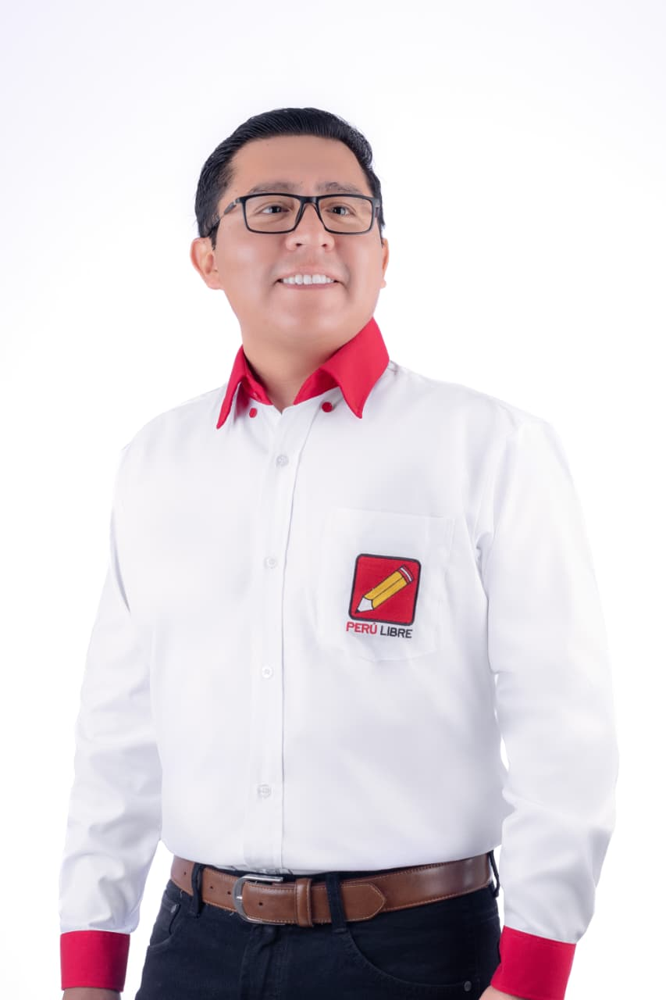
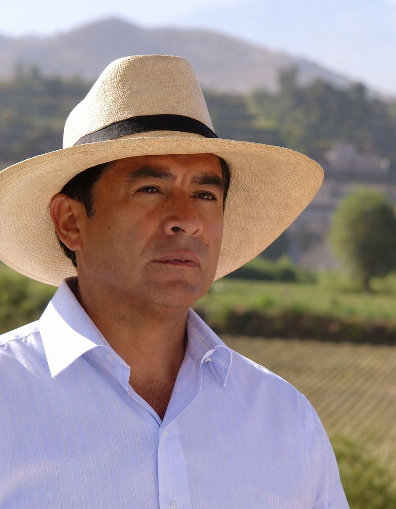
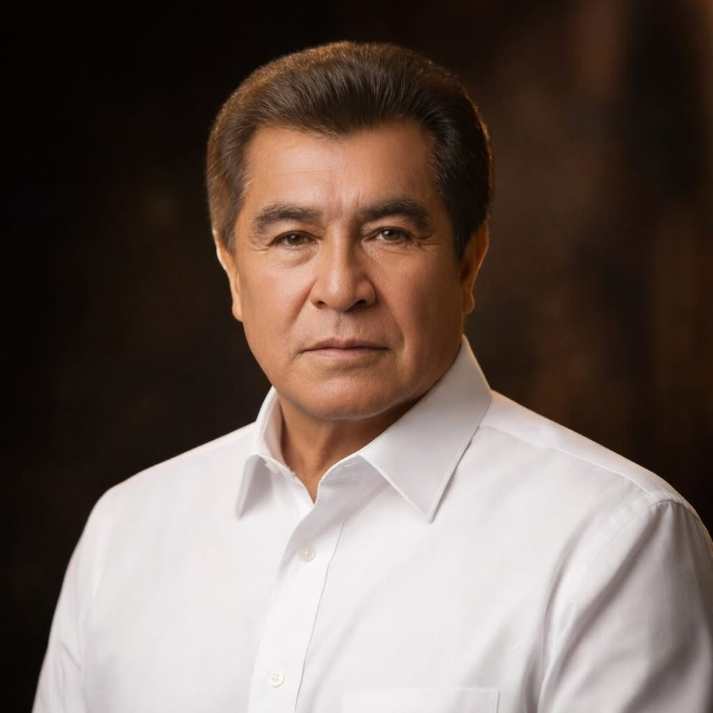
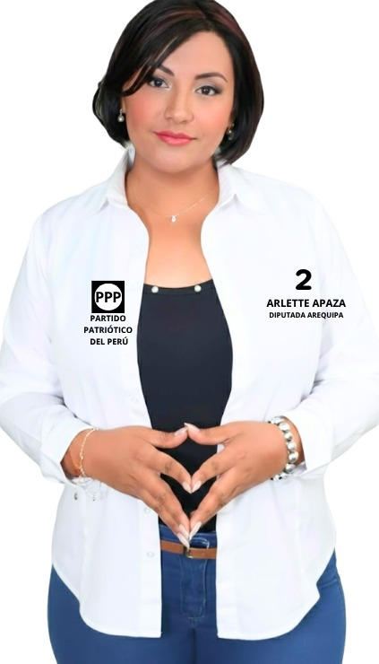
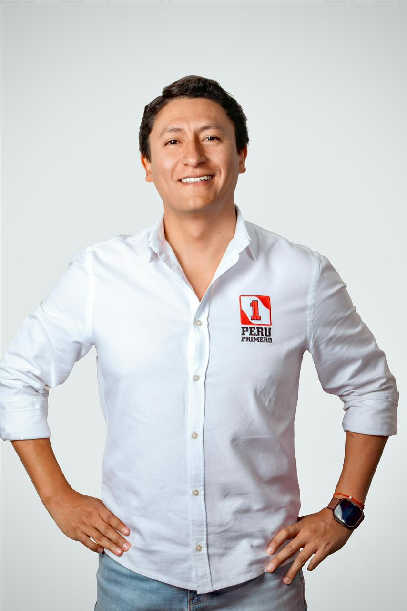
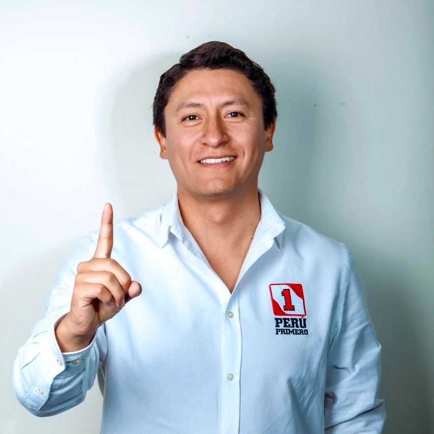
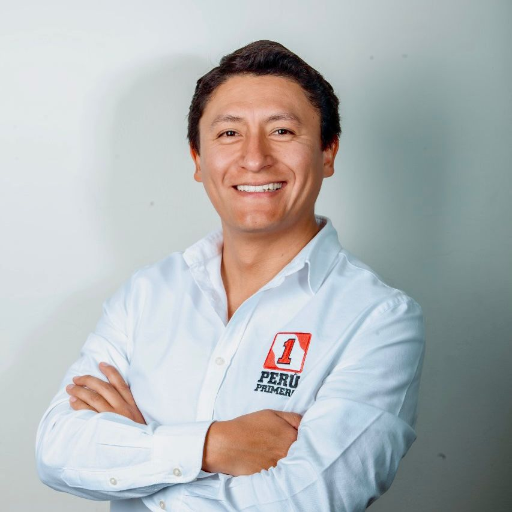
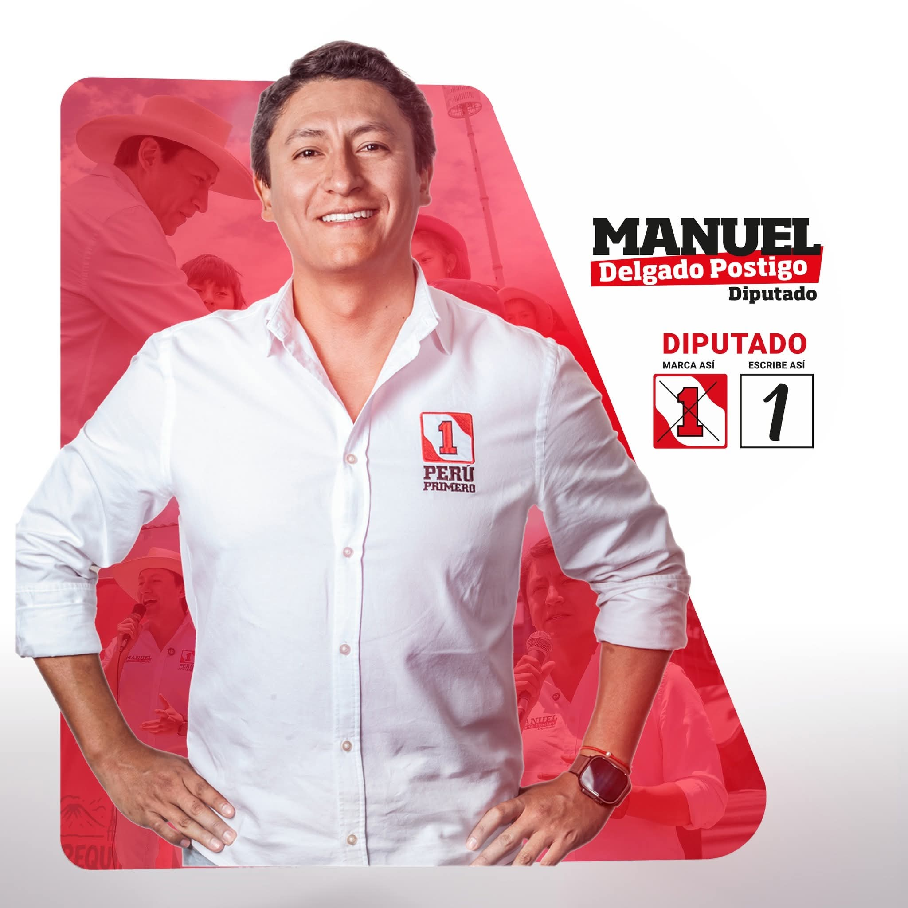

Voces con Propósito


Soy Jesús Martín Vera Cruz, estudiante de Ingeniería Civil en la Universidad Católica San Pablo.
He participado activamente en movilizaciones ciudadanas en defensa de la democracia.
También formé parte de voluntariado de rescate animal ayudando a animales abandonados, y participé en recolectas solidarias para la lucha contra el cáncer. Creo en el compromiso social y en trabajar para construir una sociedad más justa


José Zevallos Banda. Licenciado en Filosofía, Maestro en Gestión y Políticas Públicas.
Bachiller en Administración. Destaca por su versatilidad, al combinar su labor como docente universitario
Con una sólida trayectoria como especialista y asesor en gestión pública. Cuenta con experiencia liderando áreas de logística, abastecimiento y administración en diversas entidades gubernamentales.


Hijo de migrantes, crecí en PPJJ Augusto Freyre de Hunter sin agua, luz, estudie derecho en la Universidad Nacional de San Agustin.
Maestría en Derecho Civil, especialista en derecho registral y notarial.
Microempresario en un emprendimiento familiar "Restaurant El Arado". Luchador social presente en la defensa de las causas justas, defendiendo el Valle de Tambo, por una Nueva Constitución, contra la usurpadora Boluarte y otro.
.png)


Renzo André Estrada Huerta es licenciado en Derecho, líder político arequipeño
Candidato a la Cámara de Diputados por Avanza País con el número 1 por Arequipa.
Fundador del Frente Demócrata Arequipa y de la asociación Libertad Perú, promueve la participación ciudadana y el liderazgo juvenil. Reconocido como Parlamentario Joven del Bicentenario, impulsa una agenda en favor de la poblacion.


Daniel Vera Ballón es ingeniero y político peruano. Fue el primer presidente regional de Arequipa 2003–2006
Diputado nacional (1990–1992). Actualmente es candidato a la Cámara de Diputados por Arequipa en las elecciones de 2026
Promueve proyectos estratégicos como el puerto de Corío para el desarrollo económico del sur, impulsando también la descentralización y la inversión regional.

Política arequipeña, licenciada en Eduación y Administración, e ingenieria informática, graduada en Italia.
Maestría en gestión pública por la Universidad Autónoma de Barcelona y cursa estudios de doctorado
Su labor parlamentaria se enfocará en jóvenes, mujeres y sectores vulnerable, promoviendo el desarrollo sostenible de la región.




Emprendedor en el rubro agrícola y abogado por la Universidad Católica San Pablo, especializado en Derecho Corporativo..
Máster en Negocios Internacionales y Certificado en Gobierno e Innovación Pública.
Mi lucha se resume en regresarle el foco de atención a la agricultura en nuestro país, liderar una transformación digital del Estado y poner a la juventud cómo el eje principal nuestra agenda.
¿Qué dos acciones concretas impulsará desde el Congreso para mejorar la seguridad ciudadana en Arequipa (extorsión, sicariato, crimen organizado) y cómo medirá los resultados de esas acciones?
¿Qué propuesta priorizará para reducir la corrupción en la contratación pública y fortalecer la fiscalización, garantizando que no se politice ni se debilite la lucha anticorrupción?
¿Qué medidas legislativas promoverá para impulsar el empleo formal y digno en Arequipa, especialmente para jóvenes, sin precarizar sus derechos laborales?
¿Qué cambios propondría para mejorar la educación (básica, técnica y superior) y la inserción laboral de los jóvenes (prácticas, meritocracia, formación dual), asegurando calidad y pertinencia?
¿Cuál es su postura frente a la despenalización o ampliación de causales del aborto y frente a la eutanasia? Independientemente de su postura, ¿qué iniciativas concretas impulsará para reducir la mortalidad materna, fortalecer la salud mental y ampliar los cuidados paliativos en el país?
¿Qué enfoque promoverá para prevenir la violencia sexual y el embarazo adolescente, respetando el rol de los padres y la libertad de conciencia?
Además, ¿qué políticas públicas propondrá para fortalecer a la familia en áreas como primera infancia, conciliación trabajo-familia, lucha contra la violencia y cumplimiento de pensiones alimenticias?